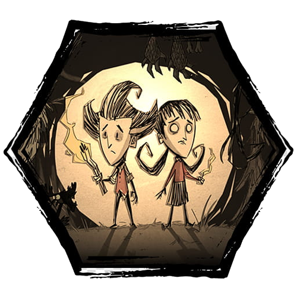

Don't Starve
Que jogo é esse e como funciona?

- É um jogo indie de aventura/sobrevivência cujo objetivo é tentar sobreviver em um mundo alternativo e altamente hostil, chamado de Constant;
- O jogo foi desenvolvido pela empresa Klei Entertainment e lançado em 21 de abril de 2016;
- Existem vários desafios a serem superados, sendo eles a fome, a insanidade, a noite, criaturas perigosas e até mesmo o frio ou o calor.
- Uma parte importante do objetivo é coletar recursos para serem transformados em ferramentas, armas, roupas, máquinas e construções.
- Além disso, há diversos personagens, biomas, criaturas, e até mesmo as estações do ano. Alguns personagens serão listados a seguir:
Personagens (alguns apenas):
- Wilson - É um cientista que foi parar no Constant, seu único "poder" é o crescimento de sua barba, que pode ser tirada para criar alguns itens.
- Willow - É uma menina que possui afinidade com o fogo e possui um ursinho chamado Bernie, e seu item especial é um isqueiro usado para iluminar durante a noite.
- Wolfgang - Ele é um simplório homem forte que é muito prepotente sobre a sua força, se sua fome estiver cheia, ele ira causar mais dano e ter mais vida, porém se sua fome estiver quase vazia, ele ficará fraco.
- Woodie - É um lenhador que possui um machado falante chamado Lucy, e também carrega consigo um segredo terrível. (e é meu personagem favorito hehe)
Gameplays e Referências:
Don't Starve - 5 Dicas Úteis (Objetivo) / Magnum of Spades
Don't starve Fandom.
Conheça o Mundo de Dont Starve Together
Don't Starve: Starver's Carol - A Winter's Feast Dev Cover (Fansing) Feliz Natal!